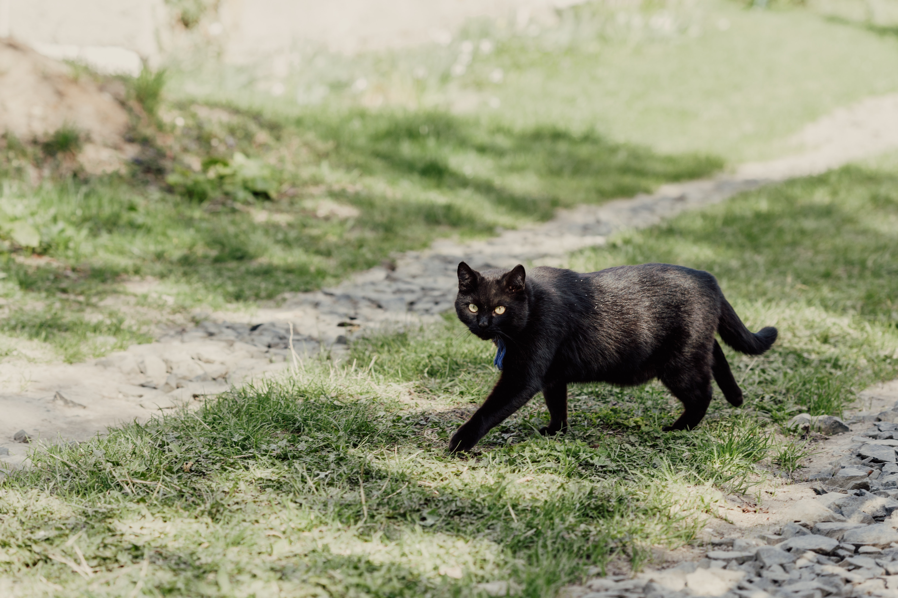
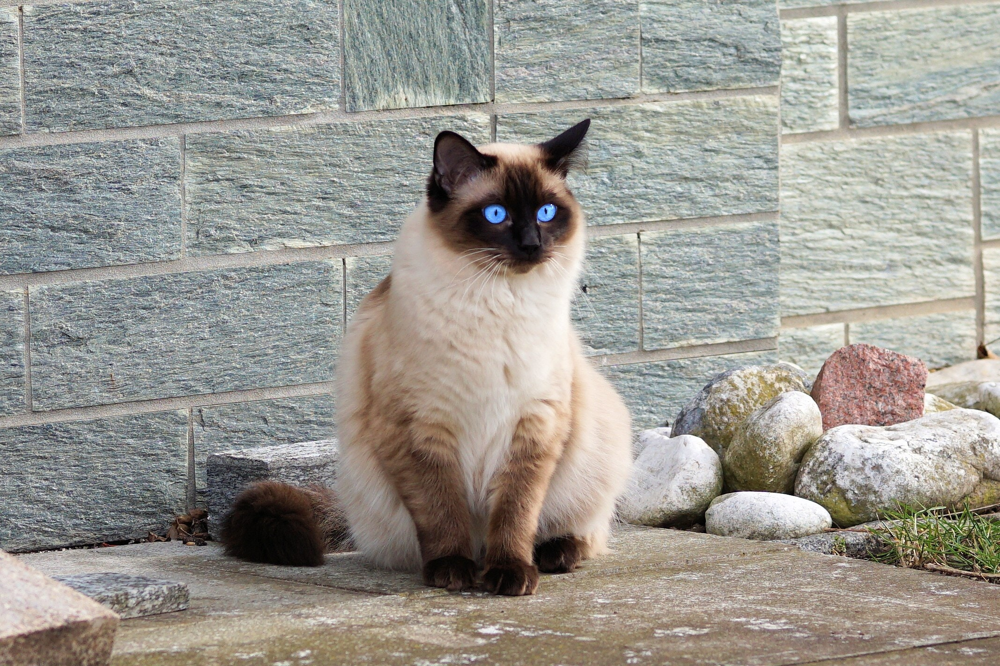

Top 10 Foreign Cat Breeds
1. Himalayan Cats
These are quite famous species in India, also known as Himmie and Colourpoint Persian cat. The origin of this breed is done by crossbreeding Persian and Siamese to get different colors and blue eyes. They are available in brown, cream, red, and mainly white colors with color points scattered on the face, ears, legs, and tail. They have beautiful mesmerizing blue eyes. They are not very active and like to cuddle in their pet parent’s lap rather than play. They can be your perfect partner as they are loyal and loving by nature.
Group – Longhair
Height – 9 to 12 inches
Weight – 7 to 12 lbs
Life Span – 9 to 15 years
2. Persian Cats
Also known as Persian Longhair and Iranian. The origin of Persian cats is from Iran. They are beautiful creatures with large deep eyes. They are lazy and like to relax all the time, and they are attention seekers, often acting finicky for that. They can be prone to biting, as they consider it play.
Group – Longhair
Height – 10 to 15 inches
Weight – 7 to 12 lbs
Life Span – 12 to 17 years
3. Siamese Cat

Siamese is a common Asian cat breed, originating from Thailand. They are light in color and have great color points in lilac, seal, blue, and chocolate. They are also very active due to their athletic body – long legs, oval paws, and long tails. They are smart, demanding, and need your attention. They can be a great companion if you have a good amount of time for them.
Group – Shorthair
Height – 8 to 10 inches
Weight – 8 to 12 lbs
Life Span – 12 to 20 years
4. Bombay Cat
Also known as Mumbai cat. There are two kinds available – the American and the British Bombay cat. This breed is an Asian breed, but their ancestry is to black cats. These gorgeous cats resemble a black panther with golden eyes and shiny short hair. They have a muscular build, and contrary to their looks, they are friendly and calm. They are adaptive and enjoy playing and learning new tricks.
Group – Shorthair
Height – 9 to 14 inches
Weight – 8 to 12 lbs
Life Span – 12 to 16 years
5. Maine Coon

Also known as the Coon Cat. They are the largest domestic cat breed that is famous for their long hair and tufted ears. They have large muscular bodies and a long bushy tail. They are playful and intelligent, which makes them very lovable. They are known for their loyalty and love for their families. They can adapt to a variety of lifestyles.
Group – Longhair
Height – 9 to 10 inches
Weight – 10 to 25 lbs
Life Span – 12 to 15 years
6. Ragdoll
They are large, affectionate, and friendly cats. They are known for their fluffy long hair and striking blue eyes. Ragdolls are often described as gentle and laid-back. They enjoy being held and cuddled, making them great companions for families.
Group – Longhair
Height – 9 to 11 inches
Weight – 10 to 20 lbs
Life Span – 12 to 15 years
7. Scottish Fold

They are known for their unique folded ears, which give them a distinct appearance. Scottish Folds are friendly, adaptable, and love to play. They form strong bonds with their owners and are known for their sweet and calm demeanor.
Group – Shorthair
Height – 8 to 10 inches
Weight – 6 to 13 lbs
Life Span – 11 to 15 years
8. Sphynx
Known for their hairlessness, Sphynx cats are playful and affectionate. They have a unique appearance, with large ears and wrinkled skin. Sphynx cats are known for their energetic nature and enjoy being the center of attention.
Group – Shorthair
Height – 8 to 10 inches
Weight – 6 to 13 lbs
Life Span – 8 to 14 years
9. British Shorthair

Known for their dense and plush coat, British Shorthairs are calm and easygoing cats. They have a round face and stocky build. This breed is known for being loyal and good with children, making them ideal family pets.
Group – Shorthair
Height – 12 to 14 inches
Weight – 9 to 18 lbs
Life Span – 12 to 20 years
10. Burmese
Burmese cats are known for their playful and affectionate nature. They have a sleek, short coat and striking gold or yellow eyes. They thrive on human interaction and are known to be quite vocal and social.
Group – Shorthair
Height – 10 to 12 inches
Weight – 8 to 12 lbs
Life Span – 10 to 17 years